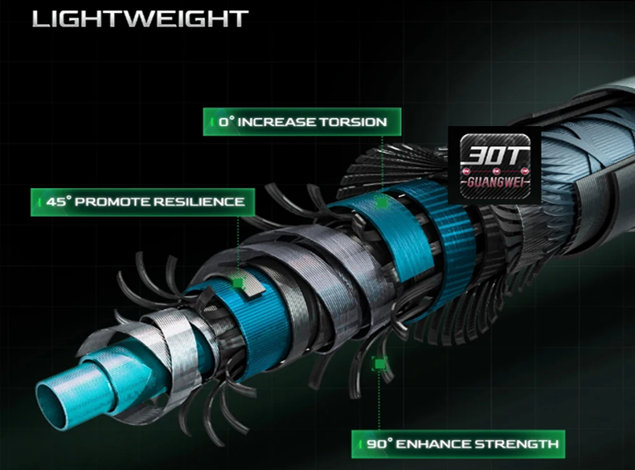
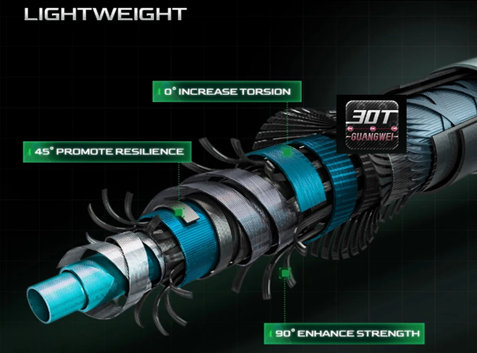

La BIUTIFU MAXIMUS Traveller es una caña de viaje diseñada para ofrecer máxima portabilidad sin sacrificar sensibilidad ni reserva de potencia. Forma parte de la gama más equilibrada de BIUTIFU, pensada para pescadores que buscan un equipo compacto, fiable y polivalente.
Fabricada en fibra de carbono 30T de alta elasticidad y equipada con anillas FUJI, esta caña está disponible tanto en versiones spinning como casting, cubriendo un amplio rango de técnicas y escenarios, desde pesca ligera hasta señuelos de peso medio.
La BIUTIFU MAXIMUS Traveller es una caña muy bien equilibrada para pescadores que priorizan portabilidad, fiabilidad y versatilidad. Su diseño compacto, unido a las anillas FUJI y al carbono 30T, la convierten en una opción ideal para viajes, escapadas o como caña polivalente.
Combinada con un carrete ligero de tamaño 2000–3000 y un sedal trenzado fino, ofrece un conjunto muy eficaz para spinning ligero, pesca desde costa o escenarios cambiantes donde el espacio y el transporte importan.
Valoración: ★★★★☆ (4,4/5)
Gracias a su longitud plegada inferior a 57 cm, la BIUTIFU MAXIMUS Traveller es perfecta para viajes en avión, coche o mochila. Su estructura multisección y materiales de calidad garantizan una buena durabilidad y un rendimiento sólido en múltiples estilos de pesca.